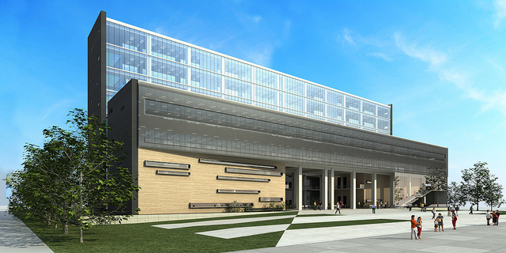

Sedes / San Joaquín



Descripción
La nueva sede San Joaquín está ubicada en la comuna de San Joaquín y se proyecta como una de las sedes emblemáticas de Duoc UC. Dotada de la más alta tecnología e infraestructura, Duoc UC Sede San Joaquín destaca por su innovador proyecto educativo que propone un enfoque complementario entre los ámbitos de la Ingeniería y Salud, concretándose en 14 carreras formativas de técnicos y profesionales con competencias que el mercado necesita. Para realizar su labor, cuenta con cerca de 200 docentes de diversos ámbitos del quehacer académico, con un importante porcentaje de profesionales activos en su especialidad. En 10.000 m2 construidos, dispondrá de una excelente infraestructura y equipamiento para entregar a sus alumnos una formación práctica y de alto nivel. La Sede contará con un Centro Tecnológico Automotriz, un Centro Tecnológico de Electrónica y Automatización y un Centro Tecnológico de Salud, infraestructura que permite además mantener importantes vínculos con el sector empresarial y, así, dar apoyo integral al sector productivo. P: Presenciales PEV: Programa Ejecutivo Vespertino
Carreras que se imparten
Ingeniería
Ingeniería en Automatización de Procesos Industriales (Diurno/Vespertino)Ingeniería en Electricidad y Electrónica (Diurno/Vespertino)
Ingeniería en Maquinaria y Vehículos Pesados (Diurno)
Ingeniería en Mecánica Automotriz y Autotrónica (Diurno/Vespertino)
Técnico en Electricidad y Electrónica (Diurno/Vespertino)
Técnico en Energías Renovables y Eficiencia Energética (Diurno)
Técnico en Instrumentación y Automatización Industrial (Diurno/Vespertino)
Técnico en Mantenimiento Industrial (Diurno/Vespertino)
Técnico en Maquinaria y Vehículos Pesados (Vespertino)
Técnico en Mecánica Automotriz y Autotrónica (Diurno/Vespertino)
Salud
Informática Biomédica (Diurno)Técnico de Enfermería (Diurno)
Técnico de Laboratorio Clínico y Banco de Sangre (Diurno)
Técnico de Radiodiagnóstico y Radioterapia (Diurno)